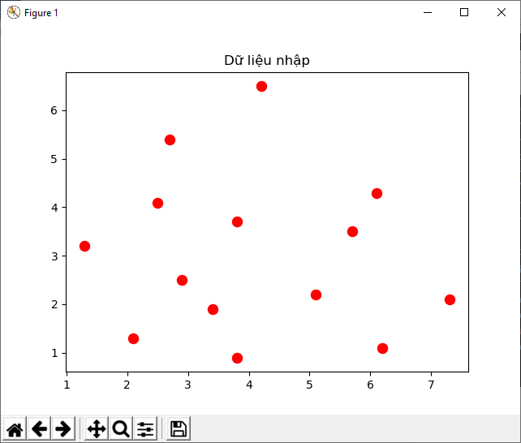
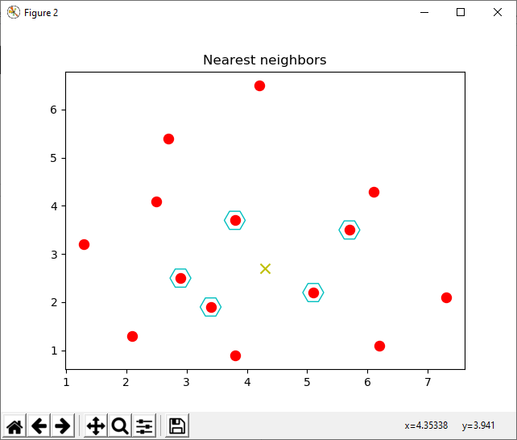
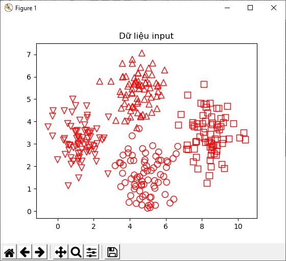
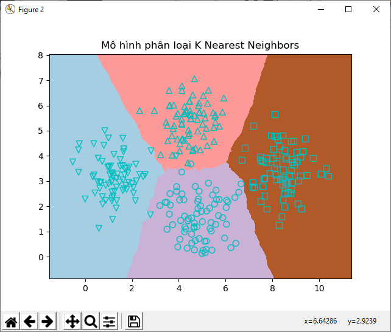
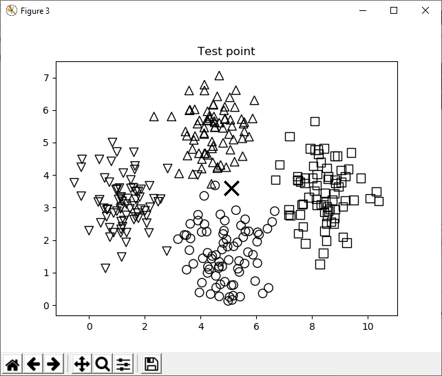
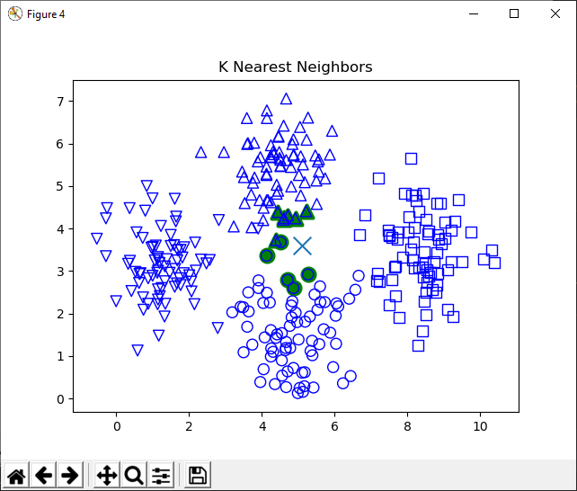

5
Xây dựng hệ thống
gợi ý, giới thiệu
Trong chương này chúng ta sẽ học về các xây dựng một hệ thống gợi ý video. Chúng ta sẽ thảo luận về cách xây dựng một đường ống training (training pipeline) có thể train cùng với tham số tùy biến. Chúng ta sẽ học về bộ phân loại Nearest Neighbors và xem làm thế nào để thực hiện nó. Chúng ta sẽ dùng những khái niệm để thảo luận hợp tác các bộ lọc và sau đó sử dụng nó để xây dựng một recmmender system.
Sauk hi học xong chương này chúng ta sẽ học được những thứ sau:
Tạo một training pipeline
Những hệ thống Machine-Learning thường được xây dựng bằng cách sử dụng nhiều modules khác nhau. Những modules này được kết hợp theo một cách riêng để đạt được mục đích cuối cùng. Thư viện sckit-learn có những hàm có thể giúp chúng ta xây dựng những đường ống bằng cách nối những modules khác nhau vào với nhau. Chúng ta chỉ phải chỉ định những modules cùng với cái thông số tương ứng. Sau đó nó sẽ xây dựng một đường ống bằng cách sử dụng những modules để sử lý và huấn luyện dữ liệu hệ thống.
Các đường ống này có thể bao gồm các modules để thực hiện các chức năng khác nhau như lựa chọn tính năng (feature selection), xử lý thô (preprocessing), random forest, phân nhóm, và nhiều thứ như vậy. Trong phần này, chúng ta sẽ thực hiện xây dựng một đường ống để chọn tính năng K-top từ một điểm dữ liệu input và sau đó phân loại chúng sử dụng một bộ phân loại Extremely Random Forest.
from sklearn.datasets import samples_generator
from sklearn.feature_selection import SelectKBest,f_regression
from sklearn.pipeline import Pipeline
from sklearn.ensemble import ExtraTreesRegressor
# Giờ thì hãy tạo một vài nhãn từ dữ liệu cho trước để train và test. Trong scikit-learn có một functions có thể thực hiện nó.
# Trong chỗ này chúng ta sẽ tạo 150 điểm dữ liệu, tại mỗi điểm dữ liệu có một vector 25 chiều.
# Những số trong mỗi vector này sẽ được tạo ra bằng cách sử dụng một bộ tạo số ngẫu nhiên. Mỗi điểm dữ liệu có 6 thông tin tính năng và không có tính năng thừa.
#n_sample điểm dữ liệu
#n_feature số vector trong điểm dữ liệu
#n_class số lớp
#n_informative số thông tin trên điểm dữ liệu
X,y=samples_generator.make_classification(n_samples=150,n_features=25,n_classes=3,n_informative=6,n_redundant=0,random_state=7)
# Khối đầu tiên trong đường ống là bộ chọn tính năng. Khối này sẽ chọn số K tính năng tốt nhất.
# Hãy đặt giá trị của số K là 9
k_best_selector=SelectKBest(f_regression,k=9)
# Khối tiếp theo trong đường ống là một bộ phân loại Extremely Random Forest
#n_estimator số lần ước tính
#max_depth độ cao lớn nhất của cây phân loại
classifier=ExtraTreesRegressor(n_estimators=60,max_depth=4)
# Giờ thì xây dựng một đường ống bằng cách nối những khối riêng biệt bên trên chúng ta đã tạo. Chúng ta có thể đặt tên cho từng khối để theo dõi:
processor_pipeline=Pipeline([('selector',k_best_selector),('erf',classifier)])
# Chúng ta có thể thay đổi tham số của những nhóm riêng biệt này. Hãy thử thay đổi giá trị của số K trong khối đầu tiên thành 7 và số lần tính của khối 2 thành 30.
# Chúng ta sẽ dụng tên chúng ta đã gán phần trước để làm:
processor_pipeline.set_params(selector__k=5,erf__n_estimators=30)
# Train đường ống này sử dụng dữ liệu ví dụ
processor_pipeline.fit(X,y)
# Dự đoán kết quả đầu ra cho tất cả dữ liệu nhập và in nó:
output=processor_pipeline.predict(X)
print('Dự đoán đầu ra:',output)
# Tính điểm sử dụng nhãn dữ liệu đã dduwwocj gán
print("Điểm số: ",processor_pipeline.score(X,y))
# Phân tách những tính năng được chọn bởi bộ chọn khối. Chúng ta chỉ định chúng ta muốn chọn 7 tính năng trong số 25 tính năng
status=processor_pipeline.named_steps['selector'].get_support()
print(status)
selected=[i for i,x in enumerate(status) if x]
print("Chỉ số của các tính năng được chọn: ",', '.join(str(x) for x in selected))
Dự đoán đầu ra: [0.72580607 1.48776254 1.57350286 0.16845332 1.63143811 0.28419715
1.75438204 0.85543849 0.20870588 0.76611338 0.91033707 1.45821884
1.07736331 0.46991242 1.60225032 1.38814221 0.9318791 0.34375345
0.62729184 0.80638229 0.29684763 1.58691235 0.9449351 0.97980186
1.613547 1.54260186 0.54987841 0.25793025 1.29203871 1.12941252
0.72099818 1.18018859 1.28317036 0.23628288 1.52248457 1.5537845
0.81060883 1.03988114 1.82119663 1.86657518 1.50205423 0.48127497
0.73752893 1.15401467 1.73428078 0.67778417 1.44112959 1.78170262
0.8867858 0.31649897 0.89994623 1.7522823 1.1798259 1.3315383
1.50206304 0.2391394 1.78071697 1.62861004 0.27189563 1.82601046
1.58085223 0.30161375 1.01566276 0.38762182 1.59002443 1.14571478
0.59566876 0.82466357 1.00773185 1.70603515 0.975447 0.85403612
0.22619174 1.78244246 0.55902649 0.27046838 0.86079451 1.28609422
1.74811993 0.11410267 0.12870315 1.27552995 1.29504346 1.46579916
1.12245889 0.80675573 0.2941248 0.34417039 1.32394419 1.39283537
1.47331864 1.17032674 1.80521567 0.71298127 1.79290549 1.01303105
1.45748857 1.02292709 0.62299891 0.4167403 0.86323926 0.77563993
0.79056248 0.96381714 1.85775872 1.40334825 1.17785629 1.72186092
0.43689893 0.89294742 1.0053075 0.18375809 1.60450265 0.44927514
0.51530143 0.47989225 0.84356646 0.78441825 0.84729926 0.81339102
0.31165777 0.67248316 0.2571075 1.10245832 1.54534611 0.3781706
0.48948835 0.43782342 1.65147322 0.78225598 1.66001697 0.30721129
0.29983231 0.81797258 0.55205279 0.95097526 0.78301223 0.75155813
0.74325836 0.62748663 0.68803258 1.06119408 1.2500917 1.20557905
0.60565937 0.78766494 1.50937821 0.63082446 1.27099315 1.26319842]
Điểm số: 0.6754705760516474
[False False False False True False False True False False False False
True False False False False True False False False False True False
False]
Chỉ số của các tính năng được chọn: 4, 7, 12, 17, 22
Danh sách output cho thấy các nhãn được dự đoán sử dụng bộ xử lý. Điểm số là hiệu quả của phép phân tích. và cuối cùng là các chỉ số của các tính năng được chọn
Trích xuất nearest neighbors
Hệ thống Recommender system sử dụng khái niệm nearest neighbors để tìm những khuyến nghị tốt nhất. Nearest neighbors( hàng xóm gần nhất) đề cập đến quá trình xử lý tìm kiếm những điểm dữ liệu gần nhất với điểm dữ liệu đầu vào từ bộ dữ liệu cho trước. Nó thường được dùng để xây dựng hệt thống phân loại để phân loại một điểm dữ liệu dựa trên những điểm tương tự của tập dữ liệu input tới các lớp khác nhau.
import numpy as np
import matplotlib.pyplot as plt
from sklearn.neighbors import NearestNeighbors
# Tạo một bộ dữ liệu 2D
X=np.array([[2.1,1.3],[1.3, 3.2], [2.9, 2.5], [2.7, 5.4], [3.8, 0.9],[7.3, 2.1],[4.2, 6.5], [3.8, 3.7], [2.5, 4.1], [3.4, 1.9],[5.7, 3.5], [6.1, 4.3], [5.1, 2.2], [6.2, 1.1]])
# Định nghĩa một điểm nearest neighbors chúng ta muốn tách
k=5
# tạo một bộ dữ liệu test
test_datapoint=[4.3,2.7]
# Vẽ dữ liệu input
plt.figure()
plt.title("Dữ liệu nhập")
plt.scatter(X[:,0],X[:,1],marker='o',s=75,color='r')
# Tạo và huấn luyện một mô hình điểm K Nearest Neigbors sử dụng dữ liệu nhập.
knn_model=NearestNeighbors(n_neighbors=k,algorithm='ball_tree')
knn_model.fit(X)
# Sử dụng mô hình này để tách dữ liệu nearest neighbors dựa trên điểm dữ liệu test
distance,indices=knn_model.kneighbors([test_datapoint])
print('K Nearest Neighbors')
for rank,i in enumerate(indices[0][:k],start=1):
print(str(rank)+"==>",X[i])
# Vẽ đồ thị điểm gần nhất:
plt.figure()
plt.title('Nearest neighbors')
plt.scatter(X[:,0],X[:,1],marker='o',s=75,color='r')
plt.scatter(X[indices][0][:][:, 0], X[indices][0][:][:, 1],marker='H',s=350,color="c",facecolor='none')
plt.scatter(test_datapoint[0],test_datapoint[1],marker='x',s=75,color='y')
plt.show();
Kết quả:

K Nearest Neighbors
1==> [5.1 2.2]
2==> [3.8 3.7]
3==> [3.4 1.9]
4==> [2.9 2.5]
5==> [5.7 3.5]
Dựa vào hình ta tìm thấy năm điểm gần nhất với điểm dữ liệu test
Xây dựng một bộ phân loại K-nearest Neighbors
Một bộ phân loại K-Nearest Neighbors là một mô hình phân loại sử dụng thuật toán tìm hàng xóm gần nhất của một điểm dữ liệu cho trước. Thuật toán này tìm những điểm K gần nhất trong bộ dữ liệu training để nhận diện thể loại của điểm dữ liệu input. Nó sẽ đặt một class cho điểm dự liệu này dựa trên một phương pháp bầu chọn đa số. Từ danh sách của những điểm K này, chúng ta sẽ nhìn vào những lớp tương ứng và chọn lấy một cùng với số phiếu bầu cao nhất.
Code nào:
import numpy as np
import matplotlib.pyplot as plt
import matplotlib.cm as cm
from sklearn import datasets
from sklearn.neighbors import KNeighborsClassifier
# lấy dữ liệu từ file chap5/data.txt
data=np.loadtxt("data/chap5/data.txt",delimiter=',')
X,y=data[:,:-1],data[:,-1].astype(np.int)
# Vẽ dữ liệu nhập
plt.figure()
plt.title("Dữ liệu input")
marker='v^os'
marker=[marker[i] for i in y]
for i in range(X.shape[0]):
plt.scatter(X[i,0],X[i,1],marker=marker[i],s=75,edgecolors='r',facecolors='none')
# Định nghĩa số điểm lân cận mà ta muốn lấy
num_neighbors=12
# Định nghĩa khoảng cách mỗi ô lưới mà chúng ta sẽ vẽ
grid_step=0.01
# Tọa một bộ phân loại K_nearest Neigbors
classifier=KNeighborsClassifier(n_neighbors=num_neighbors,weights='distance')
# Train mô hình
classifier.fit(X,y)
# tạo một lưới giá trị mà ta sẽ sử dụng để vẽ đồ thị
x_min,x_max=X[:,0].min()-1,X[:,0].max()+1
y_min,y_max=X[:,1].min()-1,X[:,1].max()+1
x_values,y_values=np.meshgrid(np.arange(x_min,x_max,grid_step),np.arange(y_min,y_max,grid_step))
# Đánh giá bộ phân loại trên tất cả các điểm trên lưới để vẽ đồ thị
output=classifier.predict(np.c_[x_values.ravel(),y_values.ravel()])
output=output.reshape(x_values.shape)
plt.figure()
plt.pcolormesh(x_values,y_values,output,cmap=cm.Paired)
# Phủ dữ liệu train lên lưới
for i in range(X.shape[0]):
plt.scatter(X[i,0],X[i,1],marker=marker[i],s=50,edgecolors="c",facecolors='none')
# Đặt giới hạn trục X và Y
plt.xlim(x_values.min(),x_values.max())
plt.ylim(y_values.min(),y_values.max())
plt.title('Mô hình phân loại K Nearest Neighbors')
# Tạo một testpoint để xem bộ phân loại làm việc
test_datapoint=[5.1,3.6]
# Tạo đò thị cùng với dữ liệu trên ning và kiểm thử testpoint xem nó nằm ở chỗ nào
plt.figure()
plt.title('Test point')
for i in range(X.shape[0]):
plt.scatter(X[i,0],X[i,1],marker=marker[i],s=80,edgecolors='black',facecolors='none')
plt.scatter(test_datapoint[0],test_datapoint[1],marker='x',s=200,facecolors='black')
#Tách điểm dữ liệu lân cận K (K Nearét Neighbors) để test dữ liệu dựa trên mô hình phân loại:
_,indices=classifier.kneighbors([test_datapoint])
indices=indices.astype(np.int)[0]
# Vẽ điểm K lân cận lên biểu đồ
plt.figure()
plt.title('K Nearest Neighbors')
for i in indices:
plt.scatter(X[i,0],X[i,1],marker=marker[i],linewidths=3,s=100,facecolors='none')
# Biểu diễn điểm dữ liệu test
plt.scatter(test_datapoint[0],test_datapoint[1],marker='x',linewidths=10,edgecolors='r')
# Bểu diễn dữ liệu input
for i in range(X.shape[0]):
plt.scatter(X[i,0],X[i,1],marker=marker[y[i]],s=75,edgecolors='c',facecolors='none')
# Print dữ liệu ra terminal
print('Predict output',classifier.predict([test_datapoint])[0])
plt.show()
Kết quả


Biên giới của bộ phân loại

Dấu X là điểm dữ liệu test trong dữ liệu input để tìm Knearest Neighbors

12 điểm dữ liệu gần nhất với điểm test data chúng ta chọn được tô màu xanh
Output ở terminal
Predict output: 1
Tính điểm tương tự (similarity scores)
Để xây dựng một hệ thống gợi ý, điều quan trọng cần hiểu là làm sao có thể so sánh những đối tượng khác nhau trong bộ dữ liệu của chúng ta. Giả sử bộ dữ liệu của chúng ta gồm những người và những sở thích xem phim khác nhau. Để gợi ý một bộ phim nào đó, chúng ta cần phải so sánh sở thích mỗi 2 người với nhau. Đây là lúc mà những điểm tương tự cần được chú ý một cách cẩn thận. Những điểm tương đồng cho chúng ta một ý tưởng về tính tương tự của 2 đối tượng.
Có 2 điểm số chúng ta thường sử dụng trong trường hợp này
import argparse
import json
import numpy as np
# Xây dựng mộ bộ phân tích cú pháp xử lý tham số input. nó sẽ chấp nhận 2 người dùng và dạng điểm số nó cần đử sử dụng tính toán điểm tương đồng:
def build_arg_parser():
paser=argparse.ArgumentParser(description='Tính toán điểm tương đồng')
paser.add_argument('--user1',dest='user1',required=True,help='First User')
paser.add_argument('--user2',dest='user2',required=True,help='Second User')
paser.add_argument('--score-type',dest='score_type',required=True,choices=['Euclidean','Pearson','Both'],help='Sử dụng thước đo nào')
return paser
# Tạo một hàm để tính toán điểm số Euclidean giữa 2 dùng. Nếu người dùng không có trong dữ liệu thì báo lỗi
def euclidean_score(dataset,user1,user2):
if user1 not in dataset:
raise TypeError(' Không tìm thấy '+ user1+'Trong bảng dữ liệu ')
if user2 not in dataset:
raise TypeError(' Không tìm thấy '+ user2+'Trong bảng dữ liệu ')
# Tạo một object để theo dõi phim được đánh giá bởi cả 2 user:
common_movies={}
# Tách những bộ phim được đánh giá bởi 2 user:
for item in dataset[user1]:
if item in dataset[user2]:
common_movies[item]=1
# Nếu không có phim nào gióng nhau chúng ta không thể tính toán điểm số:
if len(common_movies) ==0:
return 0
# Tính sai số giữa các xếp hạng và dùng nó để tính điểm số Euclidean:
square_diff=[]
for item in dataset[user1]:
if item in dataset[user2]:
square_diff.append(np.square(dataset[user1][item]-dataset[user2][item]))
return 1/(1+np.sqrt(np.sum(square_diff)))
# Tạo một hàm để tính điểm số Pearson giữa 2 số
def pearson_score(dataset,user1,user2):
if user1 not in dataset:
raise TypeError(' Không tìm thấy '+ user1+'Trong bảng dữ liệu ')
if user2 not in dataset:
raise TypeError(' Không tìm thấy '+ user2+'Trong bảng dữ liệu ')
common_movies={}
for item in dataset[user1]:
if item in dataset[user2]:
common_movies[item]=1
num_ratings=len(common_movies)
if num_ratings==0:
return 0
user1_sum=np.sum([dataset[user1][item] for item in common_movies])
user2_sum = np.sum([dataset[user2][item] for item in common_movies])
user1_square_sum=np.sum([np.square(dataset[user1][item]) for item in common_movies])
user2_square_sum=np.sum([np.square(dataset[user2][item]) for item in common_movies])
sum_of_products=np.sum([dataset[user1][item]*dataset[user2][item] for item in common_movies])
# Tính toán những tham số khác nhau để tính điểm số Pearson sử dụng những kết quả bên trên
Sxy=sum_of_products-(user1_sum*user2_sum)/num_ratings
Sxx=user1_square_sum-np.square(user1_sum)/num_ratings
Syy=user2_square_sum-np.square(user2_sum)/num_ratings
# Nếu không có độ sai lệch thì điểm số =0 :
if Sxx*Syy==0:
return 0
# trả về điểm số Pearson
return Sxy/np.sqrt(Sxx*Syy)
# Tạo hàm Main để gán tham số khi chạy file python
if __name__=='__main__':
args=build_arg_parser().parse_args()
user1=args.user1
user2=args.user2
score_type=args.score_type
ratings_file='data/chap5/ratings.json'
with open(ratings_file,'r')as f:
data=json.loads(f.read())
if score_type=='Euclidean':
print('Điểm số Euclidean:')
print(euclidean_score(data,user1,user2))
elif score_type=='Pearson':
print('Điểm số Pearson:')
print(pearson_score(data,user1,user2))
else:
print('Điểm số Pearson:')
print(pearson_score(data, user1, user2))
print('Điểm số Euclidean:')
print(euclidean_score(data, user1, user2))
Kết quả output:
Điểm số Pearson:
0.9909924304103233
Điểm số Euclidean:
0.585786437626905
Tìm người dùng giống nhau sử dụng bộ lọc kết hợp
Lọc kết hợp là xử lý xác định các mẫu trong các đối tượng trong một bộ dữ liệu để đưa ra quyết định về một đối tượng mới. Trong bối cảnh này , chúng ta sử dụng lọc hết hợp để cung cấp một sự giới thiệu bởi tìm những người dùng giống nhay trong bộ dữ liệu.
Giả định ở đây có 2 người có sự bầu chọn giống nhau cho những bộ phim, sau đó lựa chọn của họ cho một bộ phim mới cũng tương tự. Bằng cách xác định mô hình trong những bộ phim giống nhau, chúng ta làm một dự đoán. Ở phần trước chúng ta học về cách so sánh 2 người dùng khác nhau trong một bộ dữ liệu. Chúng ta sẽ sử dụng những kỹ thuật cách tính điểm đó để tìm những người dùng giống nhau trong dữ liệu của chúng ta. Lọc kết hợp là một dạng sử dụng khi phải đối mặt với bộ dữ liệu lớn. Những phương pháp này có thể dùng trong nhiều ngành khác nhau như tài chính, mua bán online, marketing, …..
Code:
import argparse
import json
import numpy as np
from compute_score import pearson_score
# Tạo một hàm để tách tham số input. Chỉ có một tham số input để lấy tên của người dùng:
def build_arg_parser():
parser=argparse.ArgumentParser(description="Tìm user giống với thằng này")
parser.add_argument('--user',dest='user',required=True,help='Thằng input')
return parser
#Tạo một hàm để tìm người dùng trong bộ dữ liệu giống với thằng vừa input. Nếu thằng đó không có trong dữ liệu thì báo lỗi:
def find_similar_users(dataset,user,num_user):
if user not in dataset:
raise TypeError('Méo tìm thấy thằng '+user+' trong cơ sở dữ liệu')
# Chúng ta đã import hàm để tính điểm số Pearson. Giờ dùng hàm đó để tính thằng input với những thằng khác trong dataset:
score=np.array([[x,pearson_score(dataset,user,x)] for x in dataset if x != user])
# Sắp xếp điểm theo thứ tự giảm dần và lấy giá trị thấp nhất
scores_sortted=np.argsort(score[:,1])[::-1]
# Tách số lượng num_user hàng đầu bởi tham số input ban đầu và return array:
top_user=scores_sortted[:num_user]
return score[top_user]
# Tạo hàm main để nhận tách tham số đầu vào.
if __name__=='__main__':
args=build_arg_parser().parse_args()
user=args.user
# Lấy dữ liệu từ file rating.json. File này có tên và bầu chọn của họ cho những bộ phim khác nhau.
with open("data/chap5/ratings.json",'r') as f:
data=json.loads(f.read())
# Tim 3 user những thằng mà giống nhất với user được chỉ định bởi tham số input. Bạn có thể thay đổi số lượng tùy ý. Và in tên những thằng đó ra cùng với điểm số:
print('Những thằng user có bình chọn giống thằng '+user)
similar_user=find_similar_users(data,user,3)
print('User\t\t\t\t\tĐiểm số')
print('-'*41)
for item in similar_user:
print(item[0],'\t\t\t',round(float(item[1]),2))
chạy đoạn code trên với tham số --user "Bill Duffy" bạn sẽ thấy output ở terminal như sau:
Những thằng user có bình chọn giống thằng Bill Duffy
User Điểm số
-----------------------------------------
David Smith 0.99
Samuel Miller 0.88
Adam Cohen 0.86
Xây dựng một hệ thống gợi ý xem phim
Bây giờ ta có tất cả các thành phần cần thiết để xây dựng một hệ thống gợi ý xem phim. Chúng ta đã học tất cả những khái niệm cơ bản cần để xây dựng một hệ thống gợi ý. Trong phần này chúng ta sẽ xây dựng một hệ thống gợi ý xem phim dựa trên cơ sở dữ liệu có trong file ratings.json . Khi chúng ta cần tìm một gợi ý phim cho một người dùng chúng ta sẽ cần tìm những người dùng giống với người đó trong cơ sở dữ liệu và gợi ý cho họ theo người vừa tìm đc:
Let's build:
import argparse
import json
import numpy as np
from compute_score import pearson_score
# Tạo một hàm để lấy tham số đầu vào.
def build_arg_parser():
parser=argparse.ArgumentParser(description='Tìm film cho thằng này')
parser.add_argument('--user',dest='user',required=True,help='Input User')
return parser
# Tạo một hàm để lấy phim gợi ý cho thằng vừa nhập. nếu thằng này không tồn tại trong cơ sở dữ liệu thì báo lỗi:
def get_recommendations(dataset,user):
if user not in dataset:
raise TypeError('Không có thằng '+user+" Trong cơ sở dữ liệu")
# Tạo biến để theo dõi điểm:
overall_scores={}
similarity_scores={}
for u in [x for x in dataset if x!=user]:
similarity_score=pearson_score(dataset,user,u)
#Nếu điểm số similarity nhỏ hơn hoặc bằng 0, thì tìm thằng user khác trong dataset:
if similarity_score<=0:
continue
# Lấy danh sách phim mà thằng user vừa lấy được đã bầu chọn nhưng thằng input chưa bầu chọn:
filtered_list=[x for x in dataset[u] if x not in dataset[user] or dataset[user][x]==0]
# Lặp lại để tìm kiếm trong filtered_líst theo dõi để đánh giá dựa trên điểm similarity_score. Và cũng đặt một item vào object similarity_scores
for item in filtered_list:
overall_scores.update({item:dataset[u][item]*similarity_score})
similarity_scores.update({item:similarity_score})
# Nếu không có phim nào giống nhau thì chúng ta không thể gợi ý cái giề cả:
if len(overall_scores)==0:
return ['Không có gợi ý phim nào cho thằng này']
# Đơn giản hóa số điểm dựa trên điểm similarity:
movie_scores=np.array([[score/similarity_scores[item],item] for item,score in overall_scores.items()])
# Sắp xếp điểm số và lấy phim gợi ý:
movie_scores=movie_scores[np.argsort(movie_scores[:,0])[::-1]]
movie_recommends=[movie for _,movie in movie_scores]
return movie_recommends
# Tạo hàm main để lấy tham số input:
if __name__=="__main__":
args=build_arg_parser().parse_args()
user=args.user
# Lấy dữ liệu từ file
with open("data/chap5/ratings.json",'r') as f:
data=json.loads(f.read())
movies=get_recommendations(data,user)
print('Danh sách phim đề cử cho thằng',user,'là')
for i,movie in enumerate(movies):
print(str(i + 1),'. ',movie)
Chạy file trên với tham số --user "Bill Duffy":
Danh sách phim đề cử cho thằng Bill Duffy là
1 . Raging Bull
Thay bằng –user "Chris Duncan"
Danh sách phim đề cử cho thằng Chris Duncan là
1 . Goodfellas
2 . Scarface
3 . Vertigo
Tổng kết :
Trong chương này chúng ta đã học về cách làm thế nào để tạo một đường ống xử lý dữ liệu có thể dùng để train một hệ thống Machine-learning. Chúng ta đã học về cách phân tách điểm K-gần nhất cho bất kỳ điểm dữ liệu nào trong một bộ dữ liệu. Sau đó chúng ta dùng cách này để xây dựng một hệ thống phân loại K-Nearest-Neighbors. Chúng ta đã thảo luận về cách sử dụng bộ lọc kết hợp để tìm điểm giống nhau giữa các người dùng trong một bộ dữ liệu và từ dó xây dựng một hệ thống gợi ý xem phim.
Trong chương tiếp theo chúng ta sẽ học về lập trình logic và làm thế nào để xây dựng một động cơ suy diễn có thể giải quyết vấn đề trong thực tế.